Masa Depan AI Ada di Ujung Jari Anda
Memahami Edge AI: Era Baru Kecerdasan Buatan yang Lebih Cepat, Privat, dan Efisien.
Narasumber: Anton Prafanto, S.Kom., M.T.
Alumnus S1 Sistem Komputer UNIKOM '11 · S2 STEI ITB · Dosen Informatika UNMUL
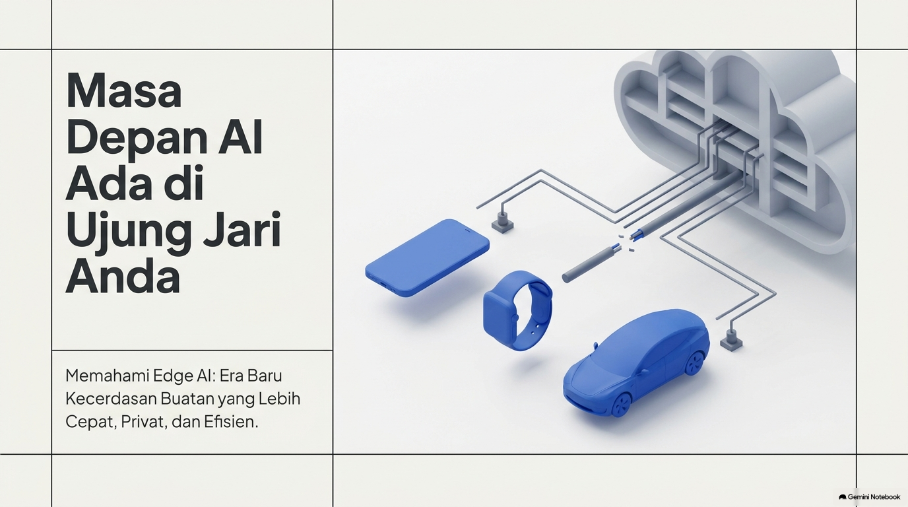
Ilustrasi PPT: Model AI bergeser dari Cloud Data Center ke Smart DeviceEdge AI adalah paradigma komputasi di mana algoritma kecerdasan buatan (khususnya deep neural networks) dijalankan secara lokal langsung pada perangkat keras fisik (mikrokontroler, SoC ponsel, NPU otomotif) tempat data diproduksi oleh sensor, alih-alih mengirimkan seluruh aliran data mentah ke cloud data center jarak jauh.
Sambut audiens UNIKOM Bandung. Tegaskan bahwa presentasi ini mengambil materi presentasi populer Edge AI namun menambahkan pisau bedah teknis dan saintifik: menguji klaim mana yang benar, mana yang merupakan hiperbola pemasaran, dan bagaimana implementasi teknis aslinya di dunia sistem komputer.
Dulu: AI di Cloud ➔ Kini: AI di Edge (Tepi Jaringan)
☁️ Dulu: Cloud AI Terpusat
Server-CentricData sensor/input dikirim utuh melalui internet ke pusat data raksasa, diproses pada klaster GPU ribuan watt, lalu respons dikirim kembali ke pengguna (contoh: ChatGPT web, Siri generasi awal 2011).
Bottleneck: Jaringan lemot = AI mati total.
⚡ Kini: Edge AI Terdistribusi
On-Device NPUModel AI yang telah dikompresi beroperasi langsung di silikon perangkat lokal (SoC ponsel, ESP32, Raspberry Pi, NPU mobil). Data langsung dianalisis di sumbernya tanpa tergantung internet aktif.
Keunggulan: Zero network dependency, sub-millisecond loop.
Dalam praktiknya, dunia nyata tidak hitam-putih. Apple (mulai iOS 15 hingga Apple Intelligence iOS 18) memigrasikan speech-to-text dan perintah rutin ke on-device Neural Engine, tetapi merutekan penalaran kompleks ke Private Cloud Compute. Arsitektur modern adalah Hybrid Cloud-Edge.
Jelaskan transisi dari tahun 2012 (era AlexNet di server) ke era 2024-2026 di mana microchip silikon memiliki NPU terdedikasi. Berikan contoh nyata: voice recognition di HP dulu kalau tidak ada kuota internet tidak bisa jalan, sekarang transkripsi audio offline bisa instan di NPU.
Komparasi 5 Dimensi Kritis: Cloud AI vs Edge AI
| Dimensi | ☁️ Cloud AI | ⚡ Edge AI |
|---|---|---|
| 📍 Lokasi Komputasi | Pusat Data Terpusat Jarak Jauh (Hyperscaler) | Perangkat Lokal (SoC, NPU, MCU On-Chip) |
| ⏱️ Kecepatan (Latensi) | 50 ms – 2.000 ms+ (fluktuatif akibat RTT jaringan) | 0.5 ms – 30 ms (deterministik, mendekati real-time) |
| 📶 Bandwidth WAN | Sangat Tinggi (Aliran stream raw video/audio 4-20 Mbps) | Nol atau Sangat Rendah (<1 Kbps hanya metadata ringkas) |
| 🔒 Privasi & Keamanan | Data sensitif berpindah melewati internet publik (risiko MITM) | Data biometrik/sensitif tetap terisolasi di hardware lokal [4] |
| 🌐 Ketergantungan Internet | Wajib Online 100% (Offline = sistem lumpuh) | Bisa 100% Offline / Standalone tanpa koneksi |
Di Indonesia, UU Perlindungan Data Pribadi (UU PDP) mewajibkan pemrosesan data pribadi spesifik (data biometrik, rekam medis kesehatan) dengan kontrol ketat. Edge AI menjadi solusi arsitektur paling aman karena data biometrik tidak pernah ditransmisikan ke server pihak ketiga.
Tabel ini menyempurnakan tabel di slide 3 PPT asli dengan memasukkan angka kuantitatif (ms, Mbps) dan konteks regulasi hukum privasi data di Indonesia (UU PDP 2022). Mahasiswa sistem komputer harus paham bahwa keputusan arsitektur Edge bukan cuma soal performa, tapi juga regulasi hukum.
Menghapus Latensi: Mengapa Mobil Otonom Butuh Edge AI?
Keputusan kritis tidak bisa menunggu. Mobil otonom yang melaju 60 km/jam (16.7 m/detik) tidak memiliki kemewahan waktu untuk menunggu respon server cloud ketika ada pejalan kaki melintas tiba-tiba di depan sensor LiDAR/kamera.
• Edge AI On-Chip (25ms NPU Pipeline): Mobil bereaksi hanya dalam 0.41 meter! 🛡️
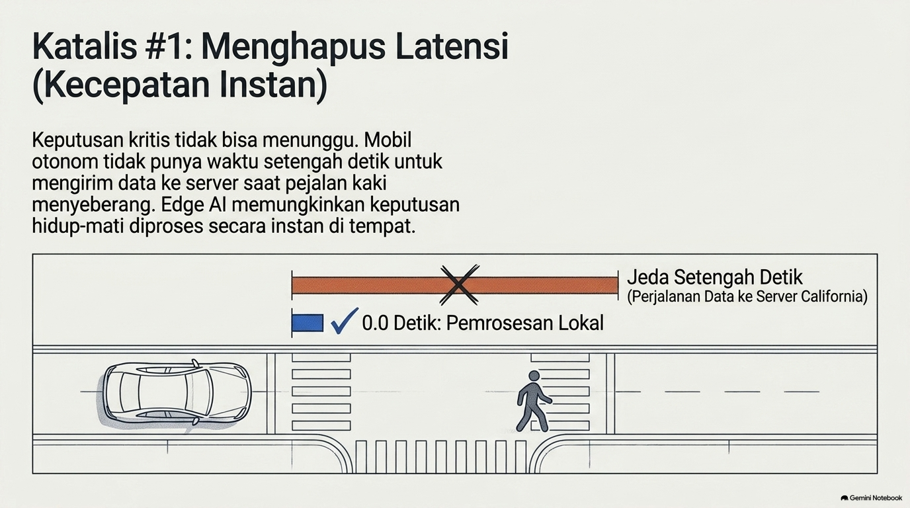
Ilustrasi PPT Asli: Komparasi Jeda Setengah Detik vs Pemrosesan LokalKlaim "0.0 Detik" pada PPT adalah hiperbola non-ilmiah. Dalam hukum fisika dan elektronika digital, tidak ada latensi 0.0s. Pipeline persepsi otonom (eksposur kamera 16.6ms @60fps + inferensi TensorRT/NPU ~12ms + aktuasi hidrolik rem ~20ms) membutuhkan total ~45–60 ms. Keunggulan Edge AI adalah determinisme (latensi terprediksi di bawah batas aman ISO 26262 ASIL-D), bukan nol detik.
Soroti bahwa di slide asli tertulis '0.0 Detik'. Sebagai saintis dan insinyur komputer, kita harus kritis: komputasi membutuhkan siklus clock prosesor, transmisi bus PCIe, dan frame rate sensor. Namun 45 ms vs 500 ms di kecepatan 60 km/jam adalah perbedaan antara selamat vs kecelakaan fatal.
Mencegah Krisis Bandwidth: Asal-Usul Angka "4 TB / Hari"
Mengirim seluruh aliran data mentah ke Cloud secara konstan adalah pemborosan fatal dan mustahil secara ekonomi. Satu armada mobil otonom dengan 8 kamera 4K, 1 LiDAR, dan 5 Radar menghasilkan gigabyte data setiap detik.
🔻 Edge Data Funnel (Penyaring Cerdas)
Input Sensor Mentah: ~4 Terabyte / hari per kendaraan.
Proses On-Device: Deteksi objek, pelacakan jalur, segmentasi semantik.
Output ke Cloud: Hanya log anomali / disengagement (< 50 MB / hari). Reduksi 99.98%!
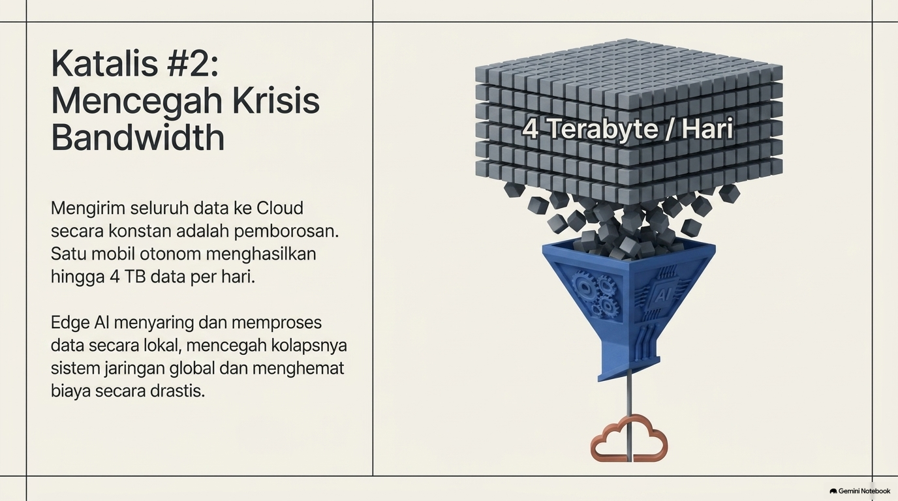
Ilustrasi PPT: Corong Data Filter Edge AIStatistik "4 Terabyte per hari" pertama kali dihitung secara resmi oleh Brian Krzanich (Mantan CEO Intel) pada AutoMobility LA Keynote 2016: Kamera (~20-40 MB/s), Radar (~10-100 KB/s), Sonar, GPS, dan LiDAR (~10-70 MB/s) jika dijumlahkan menghasilkan ~4.000 GB dalam 8 jam operasi. Jika 1 juta mobil otonom beroperasi, kebutuhan bandwidth cloud mencapai 4 Exabyte/hari—jaringan seluler global akan langsung kolaps tanpa Edge AI.
Beri tahu mahasiswa bahwa data 4 TB ini bukan angka karangan bebas, melainkan breakdown sensor engineering dari Intel. Tekankan konsep 'Edge as a Filter': perangkat tepi bertindak sebagai penyaring cerdas sehingga pipa internet global tidak kebanjiran raw noise.
Privasi Tanpa Kompromi: Studi Arsitektur Apple Face ID
Dengan Edge AI, data biometrik dan privasi sensitif tidak pernah meninggalkan perangkat. Pengguna tidak perlu khawatir wajah atau suaranya bocor di internet.
🛡️ Pipeline Enkripsi Hardware Face ID
- TrueDepth Camera: Memproyeksikan >30.000 titik inframerah tak terlihat ke wajah.
- Secure Enclave Processor (SEP): Mengisolasi pembacaan sensor inframerah dari sistem operasi utama (iOS kernel).
- Neural Engine On-Chip: Mengonversi peta kedalaman 3D menjadi representasi vektor matematika terenkripsi (AES-256).
- Matching Lokal: Vektor dicocokkan di dalam memori hardware SEP. Foto wajah mentah tidak pernah disimpan ataupun diunggah ke iCloud!
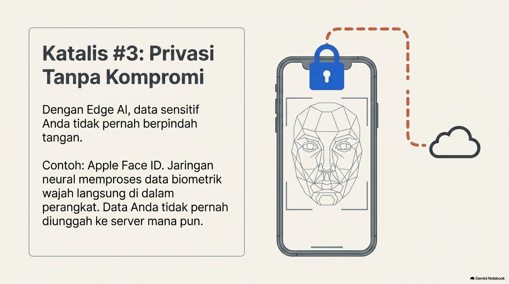
Ilustrasi PPT: Gembok Keamanan Face ID On-DeviceKlaim pada slide ini 100% Terverifikasi (Valid). Sesuai Apple Platform Security Guide (2024), Face ID dirancang dengan arsitektur zero-trust hardware isolation. Kunci kriptografi dan model matematika wajah dilindungi oleh Secure Storage Component dengan anti-replay hardware protection.
Ini contoh implementasi Edge AI paling sukses di saku 1,5 miliar manusia. Jelaskan peran Secure Enclave Processor (SEP) sebagai co-processor terpisah yang memiliki boot ROM dan enkripsi AES sendiri, sehingga biometrik tidak bisa dibajak bahkan oleh aplikasi dengan privilege root/jailbreak.
Revolusi Silikon: Dari Rak GPU Raksasa ke Neural Processing Unit (NPU)
Mengapa Edge AI baru meledak sekarang? Karena arsitektur silikon berevolusi dari GPU server berdaya 400 Watt menjadi chip hemat daya dengan matriks tensor terdedikasi (NPU) di dalam mikrokontroler dan ponsel.
• Konsumsi Daya: 300–700 Watt
• Efisiensi: ~2–5 TFLOPS/Watt
• Pendinginan: AC Industri / Liquid
• Konsumsi Daya: 0.5–5 Watt
• Efisiensi: 15–45 TOPS/Watt
• Pendinginan: Pasif (Tanpa Kipas)
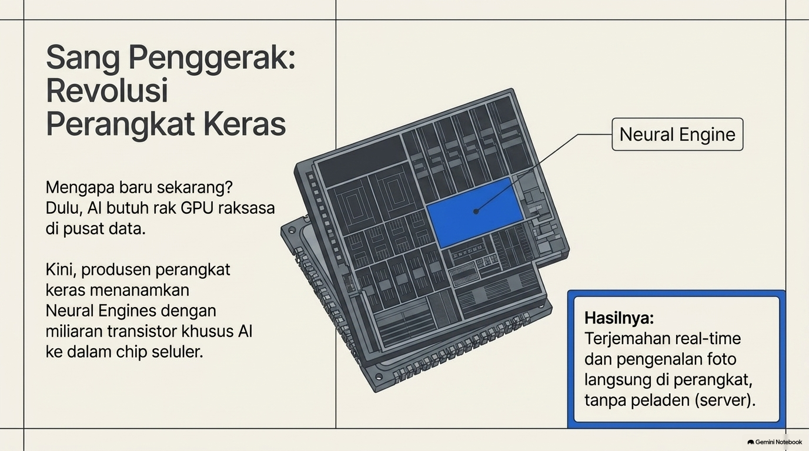
Ilustrasi PPT: Penanaman Neural Engine pada Chip Seluler
• 2017: Apple A11 Bionic pertama kali memperkenalkan Neural Engine (0.6 TOPS) & Huawei Kirin 970 NPU.
• 2020: Apple M1 (11 TOPS), Google Edge TPU (4 TOPS @ 2W).
• 2024–2026: Snapdragon X Elite (45 TOPS NPU Hexagon), Apple M4/A18 (38 TOPS), ESP32-S3 (Vector Extension untuk TinyML < Rp 50rb).
Tautkan dengan kurikulum Sistem Komputer: mahasiswa SK mempelajari arsitektur komputer (ALU, pipelining, SIMD). NPU adalah arsitektur Systolic Array atau Vector Matrix Multiplication Engine khusus untuk operasi dot product INT8 berkecepatan masif dengan konsumsi energi picojoule per operasi.
Sintesis: Simbiosis Edge & Cloud (The Continuous Loop)
Edge AI tidak membunuh Cloud AI. Keduanya membentuk siklus simbiosis mutualisme yang saling melengkapi dalam arsitektur sistem cerdas terpadu.
🔄 Pembagian Tugas Strategis
Inferensi real-time, zero-latency, filter sensor lokal, adaptasi on-device.
Pelatihan model fondasi triliunan parameter, agregasi analitik global, OTA update.
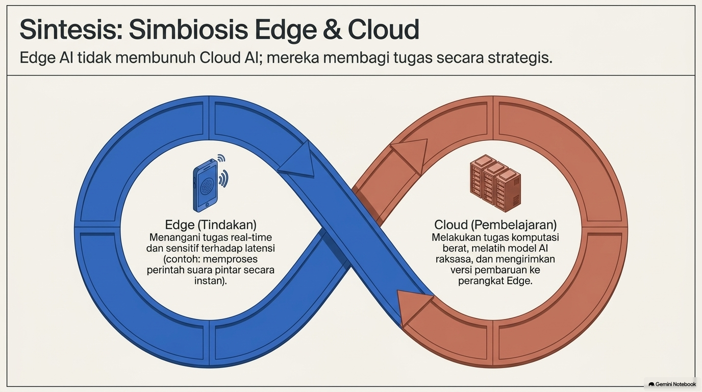
Ilustrasi PPT: Simbol Infinity Loop Edge & CloudSimbiosis mutakhir antara Edge & Cloud diwujudkan melalui Federated Learning: jutaan perangkat ponsel/edge melatih model lokal secara mandiri menggunakan data pengguna. Hanya bobot gradien (model weights updates) yang diunggah ke Cloud untuk digabungkan dengan algoritma Federated Averaging (FedAvg) tanpa pernah mengirimkan riwayat ketikan atau data pribadi pengguna.
Tegaskan bahwa Cloud tidak mati. Kita melatih model (training) di Cloud cluster karena butuh petabyte data dan ribuan GPU, tetapi eksekusi (inference) dialihkan ke Edge. Dengan Federated Learning, kita bahkan bisa melakukan update model tanpa melanggar privasi pengguna.
Lanskap Aplikasi Industri: 4 Pilar Terapan Edge AI
1. Kesehatan
Smartwatch mendeteksi aritmia jantung (Atrial Fibrillation) secara lokal via 1D-CNN real-time tanpa membocorkan sinyal EKG ke cloud publik. [15]
FDA Cleared2. Ritel Cerdas
Kamera edge menganalisis kepadatan antrean, stok rak kosong, dan pencegahan pencurian secara lokal di toko tanpa mengirim ribuan stream CCTV keluar gedung.
Vision Gateway3. Pertanian Presisi
Drone dan sensor tanah ESP32 mendeteksi penyakit daun & mengatur debit irigasi mandiri di pedalaman Kalimantan yang nihil sinyal 4G/5G. [16]
100% Offline4. Keamanan Siber
Heuristik AI on-chip mendeteksi anomali zero-day malware pada memori RAM dan register CPU sebelum perangkat terkoneksi ke jaringan korporat.
Zero-Day EDRPenelitian Stanford University pada 419.297 partisipan yang diterbitkan di New England Journal of Medicine (NEJM) membuktikan bahwa algoritma Edge AI pada sensor optik PPG jam tangan memiliki positive predictive value 0.84 dalam mendeteksi fibrilasi atrium secara otonom di pergelangan tangan.
Berikan contoh kasus nyata: di Kalimantan (UNMUL), perkebunan kelapa sawit dan hutan tropis tidak punya sinyal 4G. Sensor mikrokontroler TinyML ESP32 dan kamera perangkap liar mendeteksi kebakaran hutan dan perburuan liar secara mandiri menggunakan baterai surya kecil.
Skala Pasar Global: Peluang $100 Miliar (CAGR ~25–30%)
Permintaan akan pemrosesan AI yang instan, efisien energi, dan privat mendorong lonjakan investasi global pada perangkat keras dan software Edge AI.
📈 Proyeksi Data Industri Terverifikasi
- 2023: ~$15 Miliar (Fase adopsi awal NPU smartphone & gateway).
- 2025: $24.9 Miliar (Ledakan GenAI on-device & laptop AI).
- 2030: $66.47 M – $107 Miliar (CAGR 21.7% – 28.5%).
- 2033: Diproyeksikan menembus $118.69 Miliar. [17] [18]
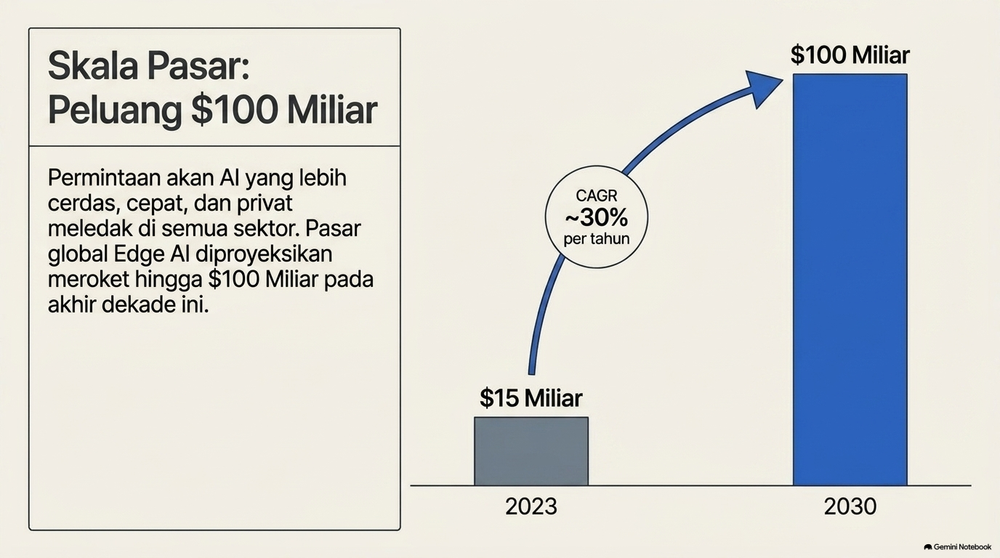
Ilustrasi PPT: Grafik $15 Miliar ke $100 MiliarKlaim angka $100 Miliar pada PPT terbukti Akurat dan Beralasan ketika mencakup total pasar ekosistem gabungan (Hardware AI ASIC, Edge Servers, dan Software). Laporan Grand View Research (2024) memproyeksikan pasar mencapai $118.69B di 2033, sedangkan MarketsandMarkets memproyeksikan gabungan hardware-software Edge AI melampaui $107B pada 2030.
Sampaikan kepada mahasiswa bahwa ini adalah peluang karir emas. Kebutuhan insinyur yang menguasai Embedded System + AI Optimizer (bukan cuma sekadar memanggil API OpenAI di python) akan sangat langka dan dicari oleh industri otomotif, semikonduktor, dan consumer electronics.
Efek Keberlanjutan: Mengapa Edge AI Lebih Ramah Lingkungan?
Pusat data kecerdasan buatan menyedot energi listrik yang sangat masif dan membutuhkan jutaan liter air pendingin. Mengalirkan jutaan byte video melalui menara BTS seluler memboroskan daya jaringan (Network Energy Consumption).
⚡ Perbandingan Fisika Energi Komputasi
• Inferensi Model INT8 di NPU On-Chip: Hanya membutuhkan ~0.001 – 0.01 Joule per inferensi!
➔ Pemrosesan lokal 100.000x lebih hemat energi daripada mengunggah video mentah ke cloud.
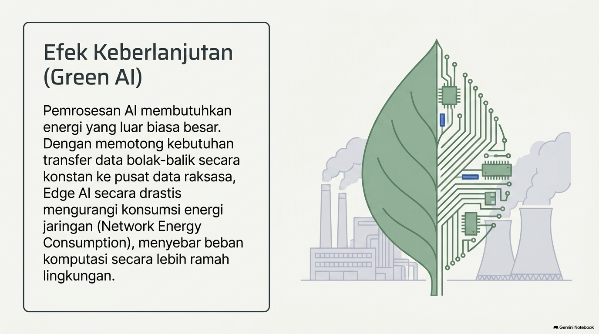
Ilustrasi PPT: Daun Sirkuit Hijau & Pabrik EnergiPaper seminal "Green AI" oleh Allen Institute for AI & University of Washington yang diterbitkan di Communications of the ACM menegaskan bahwa metrik keberhasilan AI harus bergeser dari sekadar "Akurasi Puncak dengan Biaya Komputasi Tanpa Batas (Red AI)" menjadi "Efisiensi Energi per Hasil Komputasi (Green AI)". Edge AI adalah ujung tombak Green AI.
Tunjukkan bahwa transmisi radio di menara BTS 4G/5G membutuhkan modulasi RF berdaya watt tinggi. Dengan memproses di mikrochip lokal, energi yang dihabiskan hanya elektron berpindah di transistor 3nm/5nm dengan skala picojoule per operasi.
Tantangan Utama: Kompromi Hardware & Bedah Mitos Baterai
Model Bahasa Besar (LLM) seperti LLaMA atau Mistral memiliki miliaran parameter matriks float32. Menjalankannya tanpa optimasi pada perangkat mobile menimbulkan beban memori bandwidth dan disipasi panas yang ekstrem.
🔥 Tantangan Nyata: Thermal Throttling
Saat inferensi LLM dijalankan di CPU/GPU smartphone dengan konsumsi 8–10 Watt, suhu SoC melonjak hingga 45°C dalam 3 menit. Sistem operasi langsung memangkas frekuensi clock sebesar 50–70%, menyebabkan kecepatan token anjlok drastis.
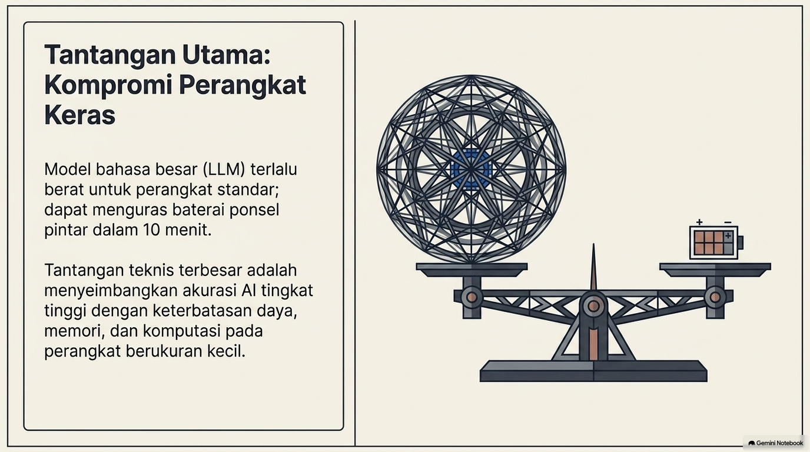
Ilustrasi PPT: Neraca Model Raksasa vs Baterai KecilKlaim "Baterai terkuras dalam 10 menit" secara teknis tidak akurat. Baterai smartphone standar (5.000 mAh @ 3.85V = 19.25 Watt-hour). Agar habis dalam 10 menit (0.16 jam), ponsel harus menyedot daya kontinu 115 Watt—yang secara fisik mustahil karena PMIC smartphone membatasi daya maksimal di 10–15 Watt. Waktu pengurasan tercepat adalah ~1.5 jam. Namun, dengan kuantisasi INT4 pada NPU (ExecuTorch/Qualcomm AI Hub), daya ditekan ke 1.5–3 Watt, menghasilkan 20+ token/detik secara stabil.
Ini koreksi kritis paling krusial dari slide PPT asli. Baterai HP tidak habis dalam 10 menit karena hukum fisika pembatasan PMIC (Power Management IC). Masalah aslinya adalah panas (thermal runaway) dan bottleneck bandwidth DRAM LPDDR5. Ini membuktikan pentingnya insinyur mengerti kalkulasi Watt-hour!
Rekayasa Solusi: Tiga Pilar Memapatkan Kecerdasan (Model Compression)
1. Kuantisasi (Quantization)
Mengonversi bobot dari FP32 (32-bit) ke INT8 atau INT4. Memangkas ukuran RAM hingga 75–87% dengan penurunan akurasi <1%. [23]
PTQ & QAT2. Pruning & Distilasi
Pruning: Membuang koneksi synapse neuron yang tidak aktif.
Distillation: Model raksasa (Teacher) melatih model kompak (Student). [24]
3. Runtime Frameworks
Ekosistem runtime edge modern: LiteRT (Google, dulu TFLite), ExecuTorch (Meta PyTorch), ONNX Runtime, dan llama.cpp. [25]
Unified RuntimePaper peraih Best Paper Award di ICLR 2016 membuktikan bahwa teknik gabungan Pruning + Trained Quantization + Huffman Coding mampu mengecilkan ukuran jaringan syaraf (AlexNet/VGG) sebesar 35x hingga 49x lipat tanpa kehilangan akurasi klasifikasi.
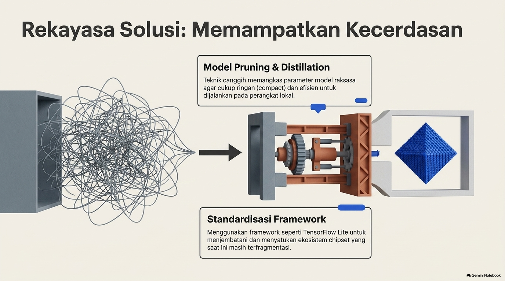
Jelaskan bahwa di industri AI, membuat model besar itu mudah, tetapi memampatkannya agar muat di RAM 512KB ESP32 atau 4GB NPU HP adalah keahlian tingkat dewa. Soroti bahwa Google telah merebranding TensorFlow Lite menjadi LiteRT pada 2024.
Kesimpulan: AI Memasuki Dunia Fisik (Embodied Intelligence)
Edge AI bukan sekadar jargon pemasaran. Ini adalah perpindahan kecerdasan buatan dari server awan yang abstrak langsung ke dunia fisik di sekitar kita: sensor, kendaraan, robot, alat medis, dan mikrokontroler.
🎓 Pesan untuk Mahasiswa Sistem Komputer UNIKOM:
1. Kuasai Fondasi Hardware & Embedded C/C++: Software AI selalu butuh silikon fisik untuk bernapas.
2. Pelajari TinyML & Quantization: Kuasai teknik INT8, DMA, and on-chip vector registers.
3. Jadilah Insinyur Berbasis Bukti (Evidence-Based): Jangan mudah terpukau jargon pemasaran; selalu uji latensi, daya (Watt), dan batasan fisika secara nyata!
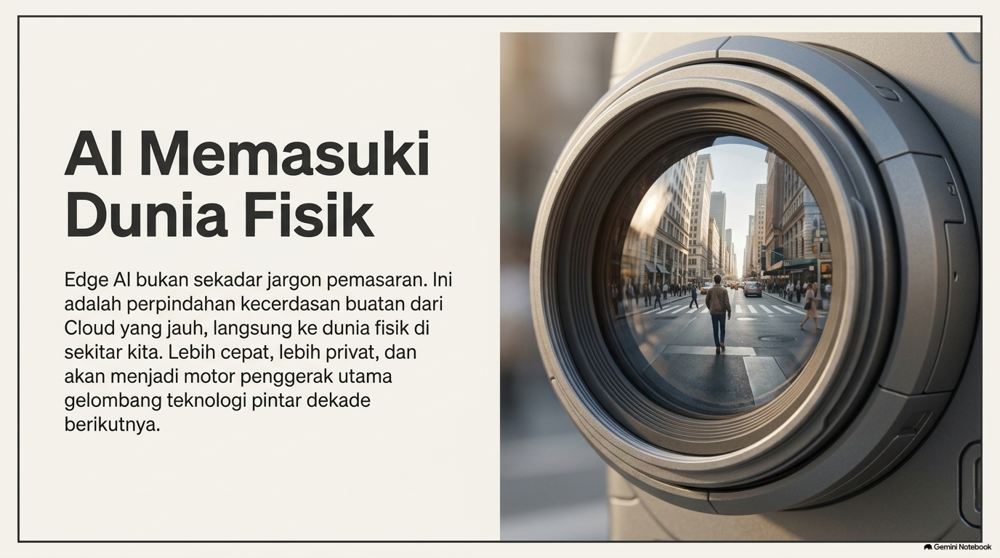
Ilustrasi PPT: Lensa Kamera Menatap Dunia NyataTutup presentasi dengan motivasi membakar semangat bagi mahasiswa Sistem Komputer UNIKOM. Berikan apresiasi kepada almamater dan undang audiens untuk sesi tanya jawab interaktif serta mencoba simulator telemetry ESP32 live di dashboard.